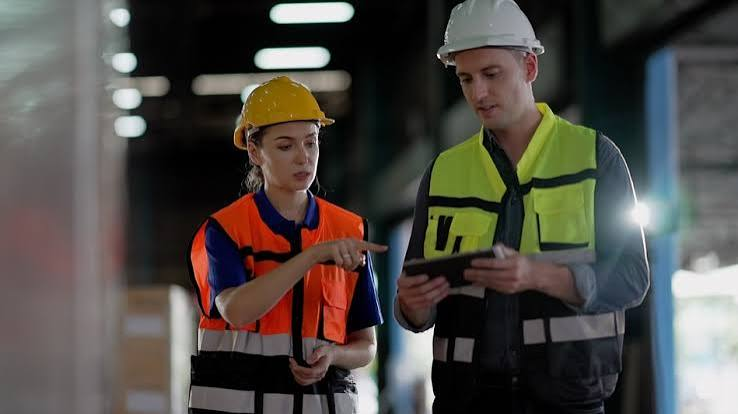
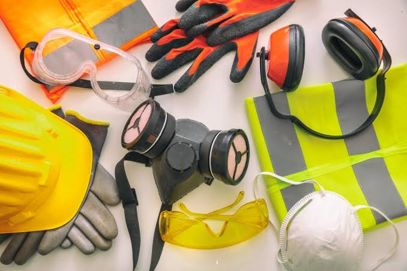
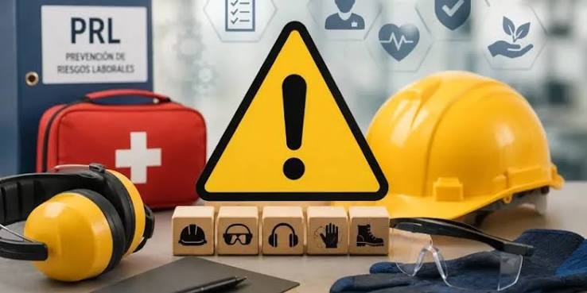

1. Cultura de Protección Integral
La seguridad es responsabilidad compartida: la empresa entrega capacitación y equipo, y el trabajador aplica cada norma en obra.
Identifica los peligros más frecuentes en la construcción, aplica las medidas preventivas obligatorias y verifica tu equipo de protección antes de iniciar cada jornada.
Filtra por categoría o busca un riesgo específico para revisar cómo prevenirlo y qué EPP necesitas.
Marca cada elemento que tienes en buen estado antes de empezar tu turno. Tu progreso se guarda automáticamente.
Referencia visual de los componentes fundamentales para mantener un entorno de construcción seguro.
La seguridad es responsabilidad compartida: la empresa entrega capacitación y equipo, y el trabajador aplica cada norma en obra.

Antes de ejecutar tareas críticas (altura, soldadura o excavación) se debe revisar el procedimiento y permisos con el supervisor.

Casco, protección ocular, respiratoria, auditiva, guantes y chaleco son la última barrera que salva vidas ante un imprevisto.

Cada frente de trabajo debe contar con señalización visible, plan de prevención de riesgos y botiquín de primeros auxilios equipado.
Una cuadrilla capacitada, comunicada y asegurada al IESS logra obras más productivas, seguras y libres de sanciones.